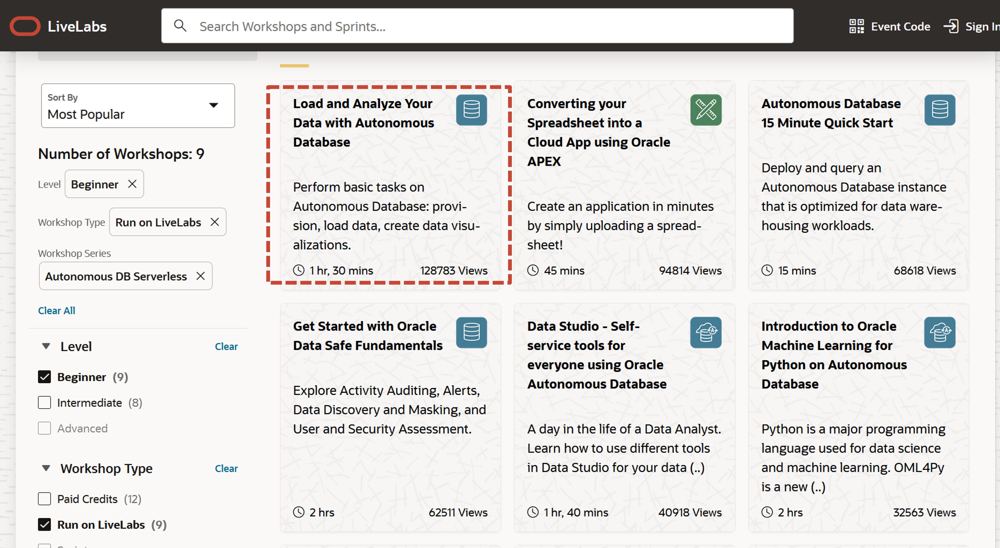
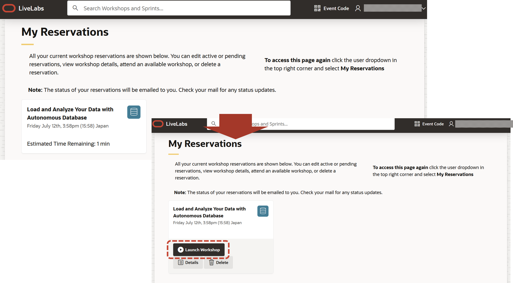
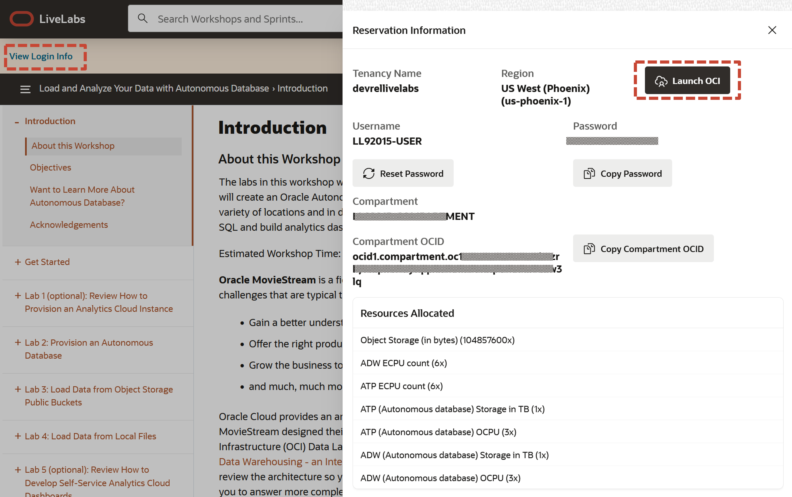
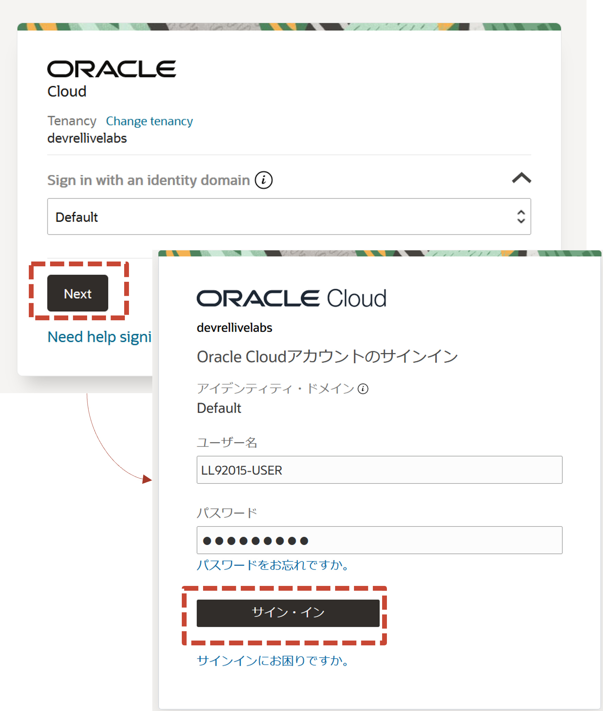
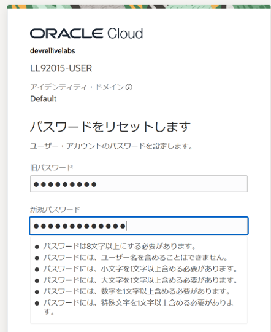
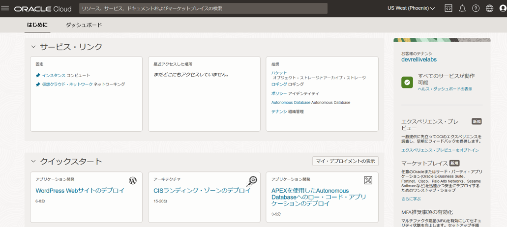

はじめに
Oracle LiveLabs とはOracle Cloud Infrastructure上でお試しいただける様々なワークショップをまとめたサイトです。2022/11現在600種類を超える数のワークショップが登録されています。

ワークショップの実行には、ご利用いただいているOracle Cloud環境およびAlways Free/トライアル環境をお使いいただけます。またワークショップによっては、Oracle LiveLabsで時間制限を設けた一時利用環境も提供しております。
この章では、Autonomous Databaseのワークショップで一時利用環境を利用する方法について紹介します。
なお、Livelabsは英語での提供ではありますが、ブラウザの翻訳機能をご利用いただくことで十分に進めることができます。
前提条件
- Oracleアカウントが作成済みであること(一時利用環境の場合は必須)
目次
所要時間 : 約10分（ワークショップ実行時間は含みません）
1.ワークショップの検索
Livelabsのトップページ にある View All Workshops ボタンをクリックするとファセット検索の画面へ遷移します。ワークショップの各カードにはワークショップのタイトルと概要、所要時間が表示されます。
ファセット検索で指定できる条件には以下があります。
- Level : 対象レベル
- Beginner(初心者)/Intermediate(中級者)/Advanced(上級者)
- Workshop Type : ワークショップの提供タイプ
- Paid Credits(有料クレジット)/Sprints(スプリント)/Run on Livelabs(Livelabs一次利用環境)/Run on Gov Cloud/ADB for Free(Always Free環境)
- Workship Series : シリーズとして提供されているワークショップのシリーズ名
- Role : ワークショップの対象のロール
- Focus Area : ワークショップの対象分野
- Product : ワークショップの対象の製品/サービス名
Livelabsのトップページの検索ボックスでワークショップ名の一部を入力して検索を行うこともできます。

今回は例として、レベルに Begginer、提供タイプ Run on Livelabs、シリーズに Autonomous DB Sharedを選択し、表示される結果から Load and Analyze Your Data with Autonomous Databaseを選択します。

2.ワークショップ詳細の確認と開始
ワークショップの詳細画面では、所要時間、アウトライン、前提条件が表示されます。Start ボタンをクリックすると、ワークショップのタイプを選択できます。

このワークショップの場合は2つの提供タイプがあります。
一時利用環境を使うため、Run on Livelabs Sandbox をクリックします。Oracleアカウントでサインインしていない場合は、サインインが求めれられますので、サインインします。
ワークショップを今すぐ実行する場合には Start Workshop Now? をON、日時をスケジュールする場合はOFFにして、カレンダーから開始したい日、時間を指定し、Submit Reservation をクリックします。
実行すると、My Reservation 画面でステータスを確認できます。今すぐ実行とした場合には、環境準備が行われ、完了するとStatusがAvailableとなります。その後 Launch Workshop をクリックすることでワークショップを開始できます。

スケジュールを設定した場合には、その予定が表示されます。
プロファイルに登録したメールアドレスに通知も行われます。スケジュールの場合は指定した日時で利用可能になるよう準備が行われます。
3.ワークショップの実行
ワークショップを実行するためには、環境へのログインが必要です。開始した後に遷移するGet startedの画面で、左上の View Login Info をクリックすると Reservation Information としてログインに必要な情報が表示されます。

Reservation Infomationでは以下を確認できます。
- Tenacy Name:テナンシー名
- Region:リージョン
- Username:ユーザ名
- Password:パスワード
- Compartment/Compartment OCID:コンパートメント/コンパートメントOCID
- Resource Allocated:割り当てられたリソース
Launch OCI ボタンをクリックすると、Tenancy Nameのテナンシーへのサインイン画面が表示されます。確認したユーザ名、パスワードでサインインします。

最初のサインインの後はパスワードの変更画面が表示されます。パスワード要件に従った任意のパスワードに変更し、Save New Passwordをクリックします。

OCIコンソールの画面が表示されます。Reservation Informationで確認したコンパートメントで、Resource Allocatedの範囲での操作が可能です。

4.ワークショップの時間延長
一時利用環境の残り時間は、開始したワークショップ画面の右上に表示されます。不足する場合は Extend Workshop Reservation をクリックすると、時間が1時間延長されます。
5.ワークショップの終了
ワークショップの終了時間が来ると自動的に終了します。終了時間の前に、My Reservation から Remove をクリックすることで環境を終了させることも可能です。
以上で、この章は終了です。
次の章にお進みください。
Tips
- ブラウザの翻訳機能の利用について
ワークショップ画面はフレームを利用しています。以下の手順でフレーム画面を表示させた後ブラウザの翻訳機能を利用することができます。-
Firefox:右クリックで”このフレーム(H)”からこのフレームだけを表示などで、フレーム画面のみを表示後に翻訳
-
Chrome:右クリックで”ページのソースを表示”後、iframe src= で指定されているURLをクリックし、フレーム画面のみを表示後に翻訳
-